Cómo proteger tu portfolio comercial de Facebook, paso a paso¶
Guía para dejar seguro el portfolio comercial donde guardas lo importante de tu negocio. Vas despacio, un paso a la vez y mirando las fotos. Si una pantalla no se parece a la foto, no toques nada y pide ayuda.
En las fotos, los nombres, correos y el negocio ("Mi Agencia") son de ejemplo.
Antes de empezar¶
Qué vas a lograr: que nadie pueda entrar a tu portfolio aunque le roben la contraseña a alguien, y que tu portfolio no quede sin dueño si un día pierdes tu cuenta de Facebook.
Qué necesitas:
- Una computadora con internet.
- Tu celular a mano (Facebook te pide códigos).
- Tener control total del portfolio. Si no lo tienes, no vas a ver estas opciones.
- Unos 15 minutos.
Dos palabras que vas a ver mucho:
| Palabra | Qué quiere decir |
|---|---|
| Portfolio comercial (o BM) | La "oficina" de tu negocio dentro de Facebook. Ahí viven tus páginas, cuentas de anuncios y píxeles. |
| Control total (o Administrar) | El permiso más alto: puede cambiar todo, agregar o quitar personas y hasta borrar el portfolio. |
Para empezar: entra a business.facebook.com/settings. Arriba a la izquierda tiene que aparecer el nombre de tu portfolio. Si aparece otro, tócalo y elige el tuyo.
Parte 1. Pedir un código del celular a todos¶
Para qué sirve: cada vez que alguien entra a tu portfolio desde una computadora o un navegador nuevo, además de la contraseña tiene que poner un código que le llega al celular. Si alguien roba una contraseña, igual no puede entrar.
Paso 1.1. En el menú de la izquierda toca "Información sobre el negocio" y baja hasta "Opciones del negocio". Al lado de "Autenticación en dos pasos" vas a ver una lista. Si dice "Nadie", hoy no se le pide el código a nadie.
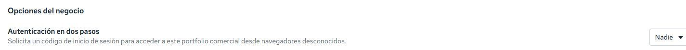
Paso 1.2. Toca la lista, elige "Todos" y confirma. Funciona desde ese momento.
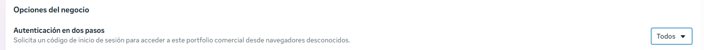
Las tres opciones:
| Opción | Qué hace |
|---|---|
| Todos (la que recomendamos) | Todos los que entran a tu portfolio tienen que usar el código. |
| Solo administradores | Solo los que tienen control total. |
| Nadie | Apagado. |
¿Se puede deshacer? Sí, volviendo a "Nadie". Pero en algunos portfolios con más de 90 días, Facebook lo deja obligatorio y no se puede apagar.
Ojo: si tu Facebook todavía no tiene el código activado, Facebook te lo va a pedir antes de dejarte entrar. Y si usas ventana privada o borras el historial al cerrar el navegador, te va a pedir el código cada vez.
Parte 2. Agregar un segundo administrador¶
Para qué sirve: si un día pierdes tu cuenta de Facebook (te la roban, Facebook la bloquea o pierdes el celular de los códigos), tu portfolio no queda sin dueño. La otra persona entra y te vuelve a agregar. Si eres el único administrador y pierdes tu cuenta, recuperar el portfolio es muy difícil. Facebook recomienda tener más de una persona con control total.
El riesgo: esa persona va a poder hacer lo mismo que tú, incluso quitarte o borrar el portfolio. Por eso tiene que ser alguien de mucha confianza (tu pareja, un socio, un familiar). Si no tienes a nadie así, es mejor no ponerlo.
Nunca uses una segunda cuenta tuya. Facebook no permite que una persona tenga dos cuentas personales y puede bloquear las dos. Ahí perderías justo lo que estás cuidando.
Paso 2.1. En el menú de la izquierda toca Usuarios → "Personas". Arriba a la derecha toca el botón azul "Invitar a personas".
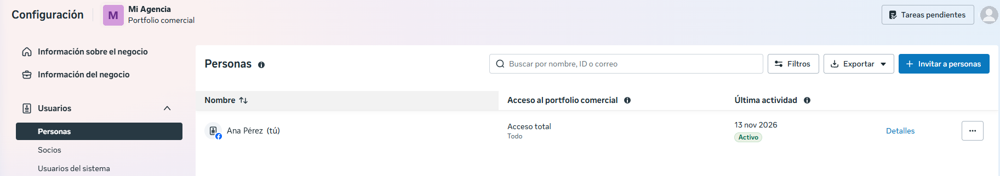
Paso 2.2. Escribe el correo con el que esa persona entra a su Facebook (tiene que ser ese mismo). Deja "Acceso temporal" apagado. Toca "Siguiente".
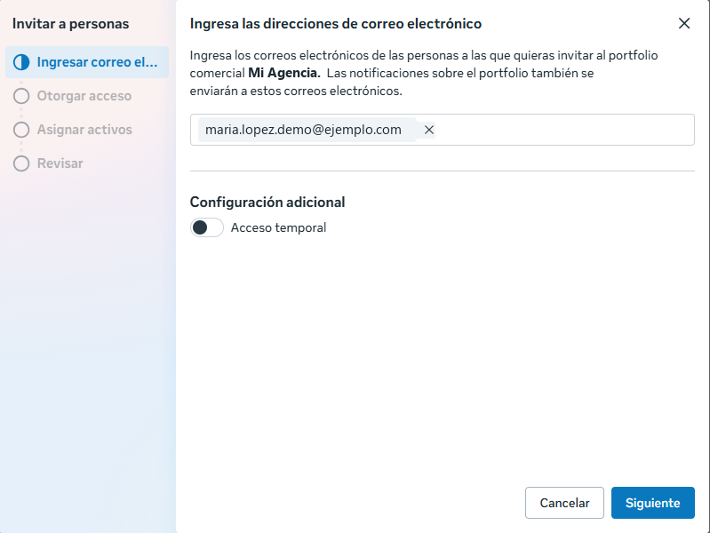
Paso 2.3. En "Acceso total", prende "Administrar". Facebook te va a mostrar un aviso amarillo que dice que no le des control a mucha gente: es normal, porque es una sola persona y de confianza. Toca "Siguiente".
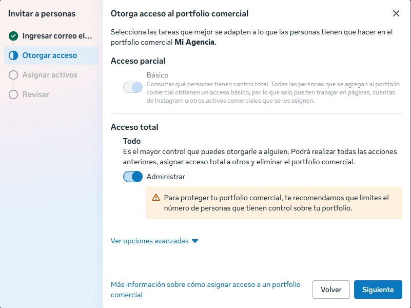
Paso 2.4. En "Asignar activos comerciales" no marques nada: con acceso total ya puede manejar todo el portfolio. Si se abrió una lista, ciérrala con la tecla Esc. Toca "Siguiente".
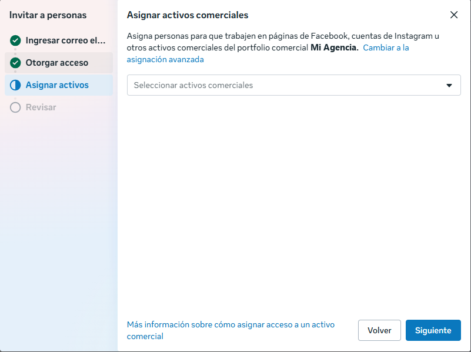
Paso 2.5. Revisa que diga "Acceso total: Todo". Que diga "No hay activos asignados" está bien. Toca "Invitar con 0 activos".
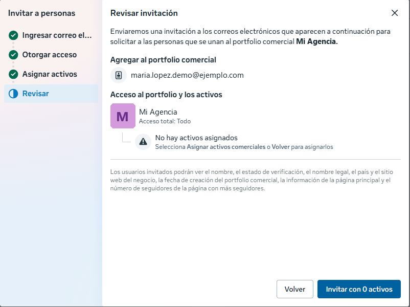
Paso 2.6. Listo: la persona aparece en la lista como "Invitado" hasta que acepte.
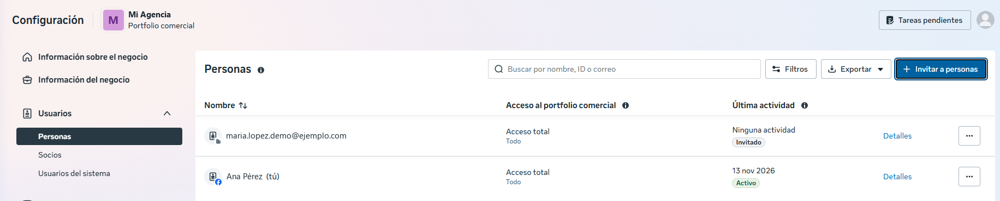
¿Se puede deshacer? Sí. En "Personas", toca los tres puntitos (…) al lado de su nombre para cambiarle el acceso o quitarla.
Parte 3. La otra persona acepta¶
Esta parte la hace la otra persona, con su propio Facebook, no tú. Le llega un correo de Facebook con la invitación.
Paso 3.1. Revisa su nombre. La casilla de mensajes de marketing puede quedar sin marcar. Toca "Continuar".
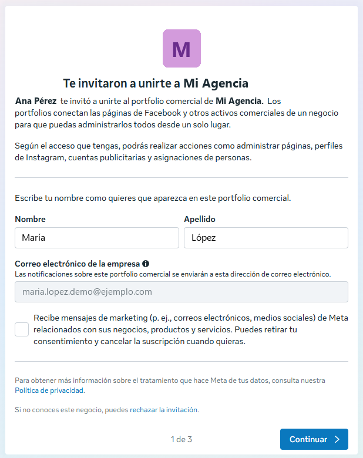
Paso 3.2. Revisa que el portfolio sea el tuyo. Que diga "Sin verificar" es normal si todavía no verificaste tu negocio. Toca "Continuar".
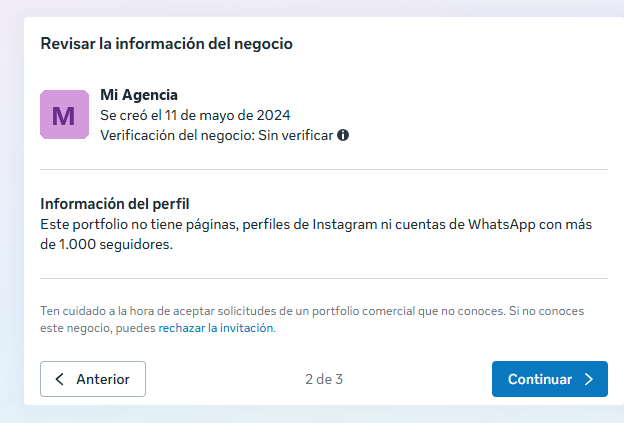
Paso 3.3. Toca "Aceptar invitación". En tu lista de "Personas" ya no dice "Invitado".
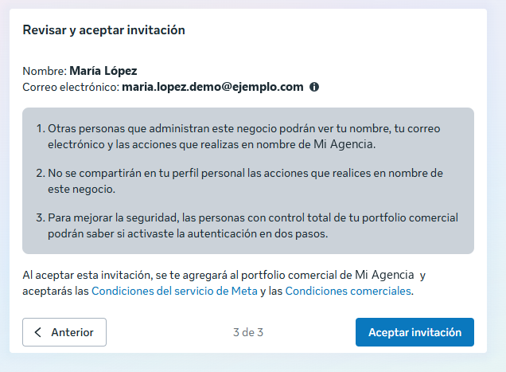
Si algo sale mal¶
| Lo que ves | Qué hacer |
|---|---|
| No aparece "Personas" o no puedes cambiar la verificación en dos pasos | No tienes control total del portfolio. Pídeselo a quien lo tenga. |
| Facebook no te deja invitar | Quizá tienes que confirmar tu correo primero: en "Información sobre el negocio", más abajo, en tu información de contacto. |
| La persona no recibe el correo | Revisa que escribiste el correo de su Facebook. Que mire en spam. Si no, quítala y vuelve a invitarla. |
| No puedes elegir "Nadie" | Facebook dejó obligatoria la verificación para tu portfolio. Está bien así. |
Lo que viene¶
Próximamente, en esta misma guía: los datos de tu negocio, verificar tu página web, verificar tu negocio con documentos y tu píxel principal.
Fuentes (ayuda oficial de Meta): Exigir la verificación en dos pasos · Agregar personas al portfolio · Centro de seguridad · Una sola cuenta personal